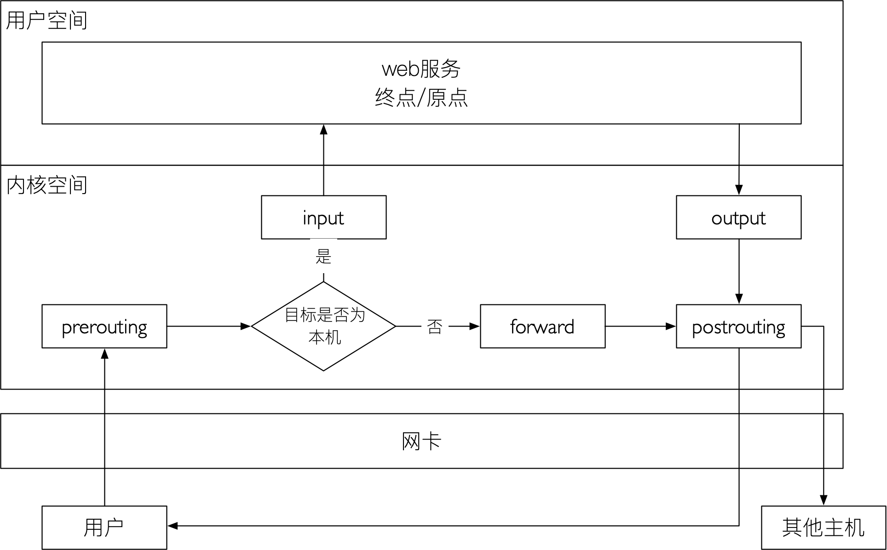
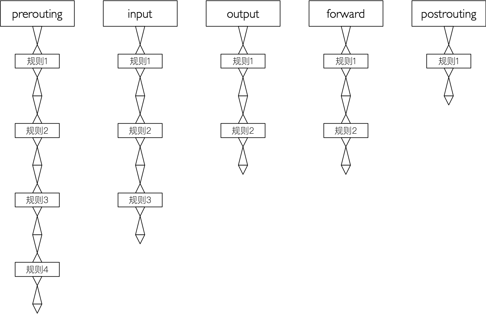
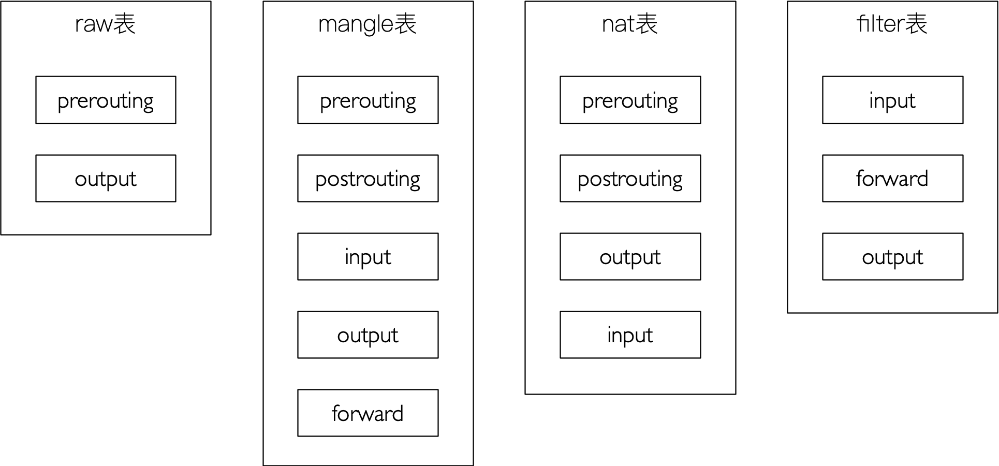
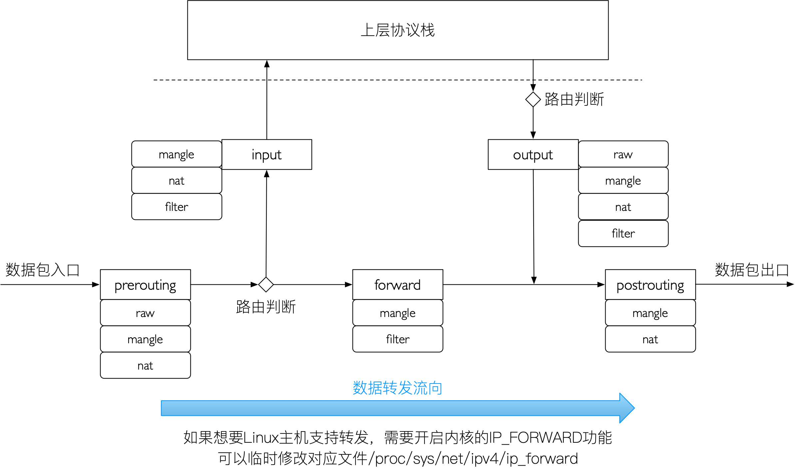

目录
相关概念
防火墙
从逻辑上讲。 防火墙可以分为主机防火墙和网络防火墙。
主机防火墙：主要针对单个主机进行防护。
网络防火墙：往往处于网络入口边缘，针对网络入口进行防护，服务于防火墙背后的本地局域网。
从物理上讲，防火墙可以分为硬件防火墙和软件防火墙。
- 硬件防火墙：在硬件级别实现部分防火墙功能，另一部分功能基于软件实现，性能高，成本高。
- 软件防火墙：应用软件处理逻辑运行于通用硬件平台之上的防火墙，性能低，成本低。
netfilter/iptables
iptables不是真正的防火墙，我们可以把它理解为一个客户端代理，用户通过iptables，将用户的安全设定执行到对应的“安全框架”中，这个“安全框架”才是真正的防火墙，这个框架的名字叫netfilter。
netfilter才是防火墙真正的安全框架（framework），netfilter位于内核空间。
iptables其实是一个命令行工具，位于用户空间，我们用这个工具操作真正的框架。
netfilter/iptables（下文中简称iptables）组成Linux平台下的包过滤防火墙，与大多数的Linux软件一样，这个包过滤防火墙是免费的，它可以代替昂贵的商业防火墙解决方案，完成包过滤、封包重定向和网络地址转换（NAT）等功能。
netfilter是Linux操作系统核心层内部的一个数据包处理模块。它具有以下功能：
- 网络地址转换（Network Address Translate）。
- 数据包内容修改。
- 数据包过滤的防火墙功能。
iptables基础
规则
iptables是按照规则办事的。规则（rule）就是网络管理员预定义的条件，规则一般定义为“如果数据包头符合这样的条件，就这样处理这个数据包”。规则存储在内核空间的信息包过滤表中，这些规则分别指定了源地址、目的地址、传输协议（如TCP、UDP、ICMP）和服务类型（如HTTP、FTP和SMTP）等。
当数据包与规则匹配时，iptables就会根据规则所定义的方法来处理这些数据包，如放行（accept）、拒绝（reject）和丢弃（drop）等。配置防火墙的主要工作就是添加、修改和删除这些规则。
当客户端访问服务器的web服务时，客户端发送报文到网卡，而tcp/ip协议栈是属于内核的一部分，所以，客户端的信息会通过内核的TCP协议传输到用户空间中的web服务中，而此时，客户端报文的目标终点为web服务所监听的套接字（IP:Port）上，当web服务需要响应客户端请求时，web服务发出的响应报文的目标终点则为客户端。这个时候，web服务所监听的IP与端口发而变成了原点，netfilter才是真正的防火墙，它是内核的一部分，所以，如果我们想要防火墙起作用，则需要在内核中设置关卡，所有进出的报文都必须通过这些关卡，经过检查后，符合放行条件的才能放行，符合阻拦条件的则需要被阻拦，于是就出现了input关卡和output关卡，而这些关卡在iptables中称为“链”。

匹配条件
匹配条件分为基本匹配条件与扩展匹配条件。
- 基本匹配条件：源地址Source IP，目标地址 Destination IP。
- 扩展匹配条件：源端口 Source Port，目标端口 Destination Port。
处理动作
- accept：允许数据包通过。
- drop：直接丢弃数据包，不给任何回应消息。
- reject：拒绝数据包通过，必要时会给数据发送端一个响应的信息，客户端刚请求就会收到拒绝的信息。
- snat：源地址转换，解决内网用户用同一个公网地址上网的问题。
- masquerade：是snat的一种特殊形式，适用于动态的、临时会变的ip上。
- dnat：目标地址转换。
- redirect：在本机做端口映射。
- log：在/var/log/messages文件中记录日志信息，然后将数据包传递给下一条规则，也就是除了记录以外不对数据包做任何操作，仍然让下一条规则去匹配。
链
多个规则形成链。

表
把具有相同功能的规则的集合叫做“表”，所以，不同功能的规则，我们可以放置在不同的表中进行管理。
iptables为我们定义了4种表。
- filter表： 负责过滤功能，防火墙；内核模块：iptables_filter。
- nat表：network address translation，网络地址转换功能；内核模块：iptable_nat。
- mangle表：拆解报文，做出修改，并重新封装；iptable_mangle。
- raw表：关闭nat表启用的连接追踪机制；iptable_raw。
链和表的关系

数据经过防火墙的流程
